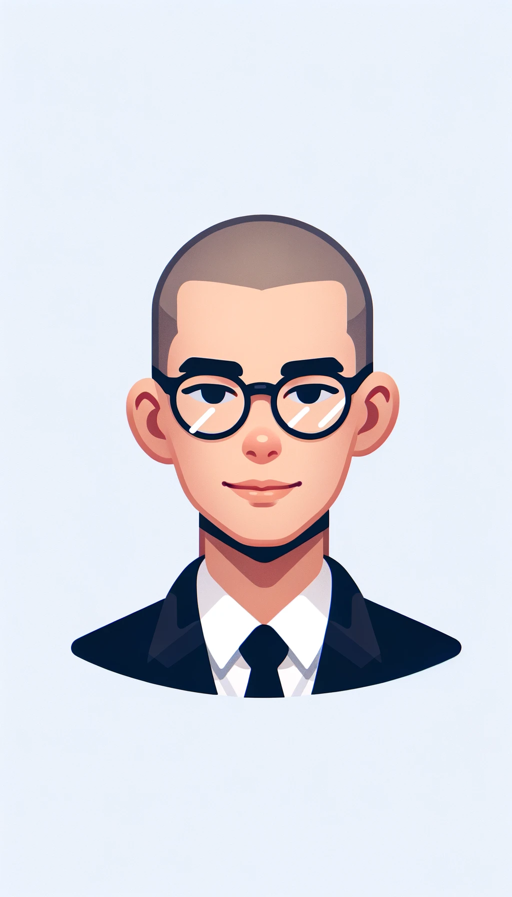

This is my Capstone Project 1 -My Resume-

Summary これまでの経歴
英語教師として４年間勤めた後、障害児向け施設で２年間勤務しました。現在はエンジニアとして働いています。
I worked for High school (in front of Osaka castle!) as English teacher for four years.
Then, I worked at institution for challenged kids for two years.
Now, I am a developer.
Education 学歴
- Graduated from Shijonawate High School in 2014
- Graduated from Osaka University in 2018
Work Experience 職歴
- English Teacher (2018-2022)
- Instructor for challenged kids(2022-2024)
- Developer (2024-)
Skills スキル、技能
English teacher licence for High School
About me MORE